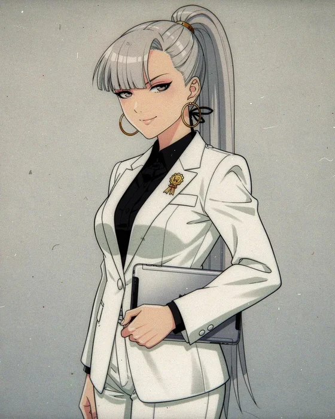
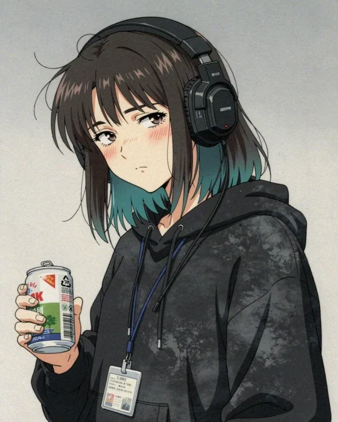
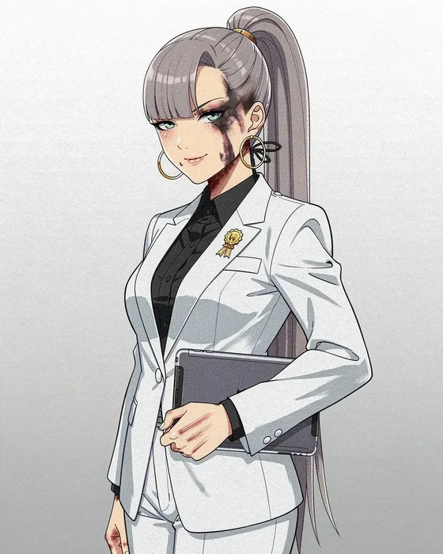
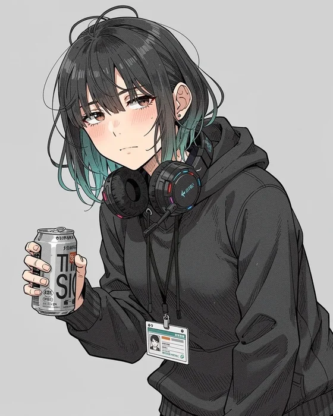
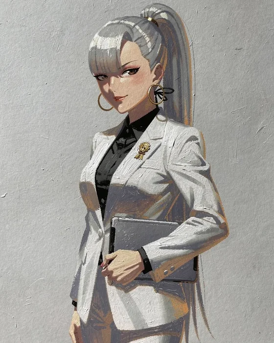
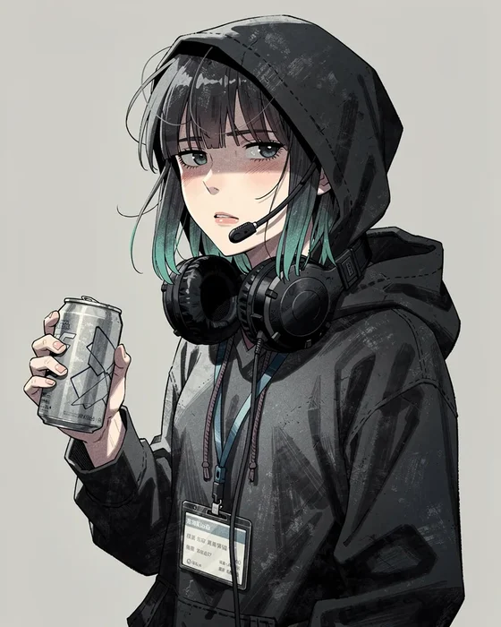
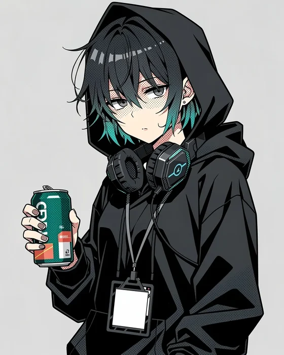

Pick an art style
The same two characters, Rei and a messier Mio, in four styles. Tell me the number you like, or which parts of which.
1. 90s anime film
Hand-painted cel look, film grain, muted colours, realistic proportions

2. Seinen manga colour
Brush-ink lines, flat muted colours, screentone texture

3. Painterly
Visible brush strokes, textured, dramatic side light

4. Bold graphic
Thick outlines, flat colour, halftone shading, poster-like